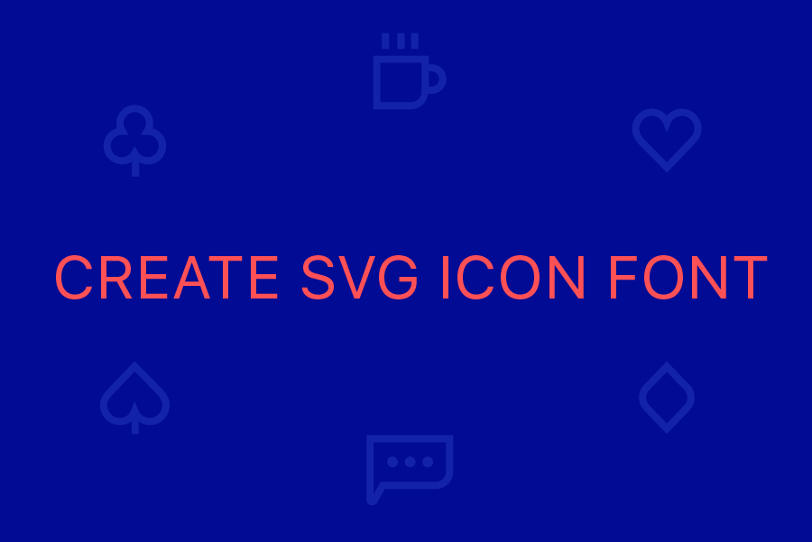
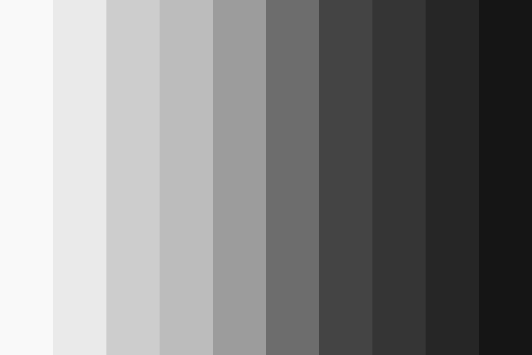

article
work
Article
Design

Icon Font 제작하기
2016.11.02
우리가 자주 사용하게 되는 디자인 요소 중 하나인
아이콘.
어떻게 제작하고 관리해야 할까?

Gray, 배경과 텍스트
2016.10.04
자주 사용하게 되는 Gray를 정하고
배경과 텍스트
에 활용하고 적용해보자.
Alcion
2016.11.18
designer
Window size:
x
Viewport size:
x